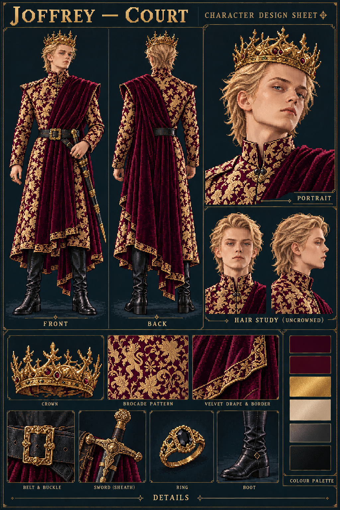
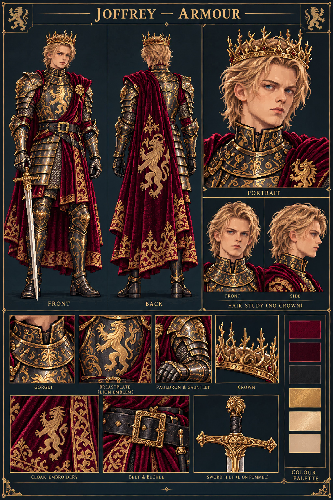

<!doctype html><html lang="zh-CN"><meta charset="utf-8"><meta name="viewport" content="width=device-width,initial-scale=1"><title>乔弗里·像素设定图</title><style>body{background:#102127;color:#eadac0;margin:24px;font:16px/1.6 system-ui}header{max-width:1500px;margin:auto}main{display:grid;grid-template-columns:repeat(2,minmax(0,1fr));gap:24px;max-width:1500px;margin:24px auto}figure{margin:0}img{width:100%;display:block}a{color:#e5bf74}h2{font-size:20px}@media(max-width:700px){main{grid-template-columns:1fr}}</style><header><h1>乔弗里·像素风角色设定图</h1><p>两张用户指定设计图已归档。点击查看像素图原尺寸，也可打开对应设计依据。</p></header><main><figure><h2>礼服像素设定图</h2><a href="U001-court-pixel-sheet-v1.png"></a><figcaption><a download href="U001-court-pixel-sheet-v1.png">下载像素设定图</a> · <a href="references/court-approved.png">查看设计依据</a></figcaption></figure><figure><h2>铠甲像素设定图</h2><a href="U001-armour-pixel-sheet-v1.png"></a><figcaption><a download href="U001-armour-pixel-sheet-v1.png">下载像素设定图</a> · <a href="references/armour-approved.png">查看设计依据</a></figcaption></figure></main></html>